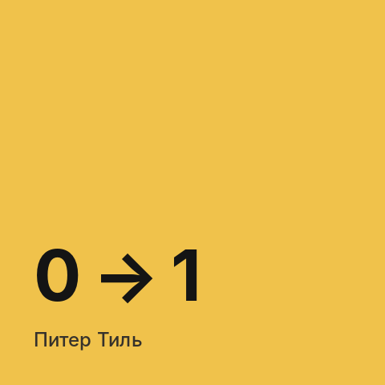

Все теги
#книги
9 постов
-
 «Вдохновлённые» Марти Кагана: главное о продакт-менеджменте
Тезисы из главной книги о профессии продакт-менеджера: чем сильные продуктовые команды отличаются от «фабрики фич» и почему большинство идей не работает с первого раза.
«Вдохновлённые» Марти Кагана: главное о продакт-менеджменте
Тезисы из главной книги о профессии продакт-менеджера: чем сильные продуктовые команды отличаются от «фабрики фич» и почему большинство идей не работает с первого раза. -
 «Стратегия голубого океана» Ким и Моборн: как уйти от конкуренции
Тезисы из книги о том, как не сражаться с конкурентами за существующий рынок, а создавать новое рыночное пространство, где конкуренции пока нет.
«Стратегия голубого океана» Ким и Моборн: как уйти от конкуренции
Тезисы из книги о том, как не сражаться с конкурентами за существующий рынок, а создавать новое рыночное пространство, где конкуренции пока нет. -

«От нуля к единице» Питера Тиля: как создавать принципиально новое Тезисы из книги сооснователя PayPal о стартапах: почему копирование не создаёт будущего, зачем стремиться к монополии и какие вопросы задать себе до старта. -
 «Думай медленно… решай быстро» Даниэля Канемана: как мы ошибаемся в решениях
Тезисы из книги нобелевского лауреата о двух системах мышления и систематических ошибках, которые совершает каждый — в том числе когда принимает продуктовые решения.
«Думай медленно… решай быстро» Даниэля Канемана: как мы ошибаемся в решениях
Тезисы из книги нобелевского лауреата о двух системах мышления и систематических ошибках, которые совершает каждый — в том числе когда принимает продуктовые решения. -
 «На крючке» Нира Эяля: как продукты становятся привычкой
Тезисы из книги о продуктах, которыми пользуются по привычке, без рекламы и напоминаний: из каких четырёх шагов складывается привычка и где проходит граница с манипуляцией.
«На крючке» Нира Эяля: как продукты становятся привычкой
Тезисы из книги о продуктах, которыми пользуются по привычке, без рекламы и напоминаний: из каких четырёх шагов складывается привычка и где проходит граница с манипуляцией. -
 «Цель» Элияху Голдратта: теория ограничений в форме романа
Тезисы из бизнес-романа о директоре завода, который за три месяца должен спасти производство, — и о теории ограничений, которая с тех пор применяется далеко за пределами заводов.
«Цель» Элияху Голдратта: теория ограничений в форме романа
Тезисы из бизнес-романа о директоре завода, который за три месяца должен спасти производство, — и о теории ограничений, которая с тех пор применяется далеко за пределами заводов. -
 «Дилемма инноватора» Клейтона Кристенсена: почему сильные компании проигрывают новичкам
Тезисы из книги о подрывных инновациях: почему хорошо управляемые компании, которые делают всё правильно, теряют рынок из-за более простых и дешёвых продуктов.
«Дилемма инноватора» Клейтона Кристенсена: почему сильные компании проигрывают новичкам
Тезисы из книги о подрывных инновациях: почему хорошо управляемые компании, которые делают всё правильно, теряют рынок из-за более простых и дешёвых продуктов. -
 «Построение бизнес-моделей» Остервальдера и Пинье: бизнес-модель на одном листе
Тезисы из книги, которая дала миру канву бизнес-модели: девять блоков, из которых складывается любой бизнес, типовые модели и способы придумывать новые.
«Построение бизнес-моделей» Остервальдера и Пинье: бизнес-модель на одном листе
Тезисы из книги, которая дала миру канву бизнес-модели: девять блоков, из которых складывается любой бизнес, типовые модели и способы придумывать новые. -
 «Спроси маму» Роба Фитцпатрика: как разговаривать с пользователями, чтобы они не врали
Тезисы из короткой книги о customer development: почему пользователи из вежливости говорят нам то, что мы хотим услышать, и как задавать вопросы, на которые нельзя соврать.
«Спроси маму» Роба Фитцпатрика: как разговаривать с пользователями, чтобы они не врали
Тезисы из короткой книги о customer development: почему пользователи из вежливости говорят нам то, что мы хотим услышать, и как задавать вопросы, на которые нельзя соврать.